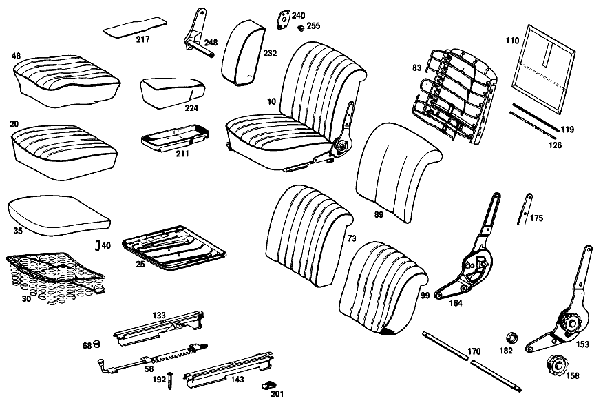

| № | Артикул | Название | Кол. | Примечание | Ограничение |
|---|---|---|---|---|---|
| 464 | A 111 910 71 01 | СИДЕНЬЕ ВОДИТЕЛЯ | 1 | RECLINING SEAT FITTINGS,LEFT [065] 021 FROM CHASSIS 028778 ALSO INSTALLED ON SEE FOOTN.62 [062] 028752, 028754, 028755, 028765, 028766, 028776. [066] 023 INSTALLED ON 034449,034471,034483,034503,034506,034508,034520,034530 | |
| 474 | A 111 910 67 30 | - ПОДУШКА СИДЕНЬЯ | 1 | СЛЕВА [402] БОЛЬШЕ НЕ ПОСТАВЛЯЕТСЯ [065] 021 FROM CHASSIS 028778 ALSO INSTALLED ON SEE FOOTN.62 [062] 028752, 028754, 028755, 028765, 028766, 028776. [066] 023 INSTALLED ON 034449,034471,034483,034503,034506,034508,034520,034530 | |
| 486 | A 110 910 13 22 | - РАМА ПОДУШКИ | 1 | СЛЕВА [081] FROM CHASSIS 034559 | |
| 491 | A 110 910 32 40 | - КОРОБ ПРУЖИНЫ | - | ||
| 491 | A 108 910 00 40 | - КОРОБ ПРУЖИНЫ | 2 | ЛЕВЫЙ И ПРАВЫЙ [081] FROM CHASSIS 034559 | |
| 496 | A 111 910 53 22 | - РАМА ПОДУШКИ | 2 | ЛЕВЫЙ И ПРАВЫЙ [058] WITH STRIP STEEL SUSPENSION [067] SLIDING ROOF FROM CHASSIS 018036 EXCEPT FOR SEE FOOTN.62;ALSO INSTALLED ON 018010 [062] 028752, 028754, 028755, 028765, 028766, 028776. | |
| 502 | A 111 914 50 14 | - НАКЛАДКА | - | ||
| 507 | A 000 984 20 61 | - Скоба | 38 | КОРОБ ПРУЖИНЫ | |
| 513 | A 111 910 75 46 | - ОБИВКА | 1 | LEFT; LEATHER [402] БОЛЬШЕ НЕ ПОСТАВЛЯЕТСЯ [065] 021 FROM CHASSIS 028778 ALSO INSTALLED ON SEE FOOTN.62 [062] 028752, 028754, 028755, 028765, 028766, 028776. [066] 023 INSTALLED ON 034449,034471,034483,034503,034506,034508,034520,034530 | |
| 521 | A 110 910 69 05 | - ФИКСАТОР | 1 | СИДЕНЬЕ ВОДИТЕЛЯ СЛЕВА | |
| 526 | A 110 919 00 60 | - РУЧКА | 2 | ADJUSTER TO SEAT FRAME | |
| 536 | A 111 910 67 32 | - СПИНКА СИДЕНЬЯ | 1 | СЛЕВА [402] БОЛЬШЕ НЕ ПОСТАВЛЯЕТСЯ [063] FROM CHASSIS 028778 ALSO INSTALLED ON SEE FOOTN.62 [062] 028752, 028754, 028755, 028765, 028766, 028776. [064] SLIDING ROOF FROM CHASSIS 018036 ALSO INSTALLED ON 018010 | |
| 546 | A 111 910 61 34 | - РАМА СПИНКИ | 1 | с SPRING CORE,LEFT [070] FROM CHASSIS 018036 DELIVER ADDITIONALLY:8X111 987 00 70 | |
| 551 | A 111 914 61 16 | - НАКЛАДКА | 1 | СПИНКА СИДЕНЬЯ | |
| 559 | A 111 910 79 47 | - ОБИВКА | 1 | LEFT; LEATHER [063] FROM CHASSIS 028778 ALSO INSTALLED ON SEE FOOTN.62 [062] 028752, 028754, 028755, 028765, 028766, 028776. [064] SLIDING ROOF FROM CHASSIS 018036 ALSO INSTALLED ON 018010 | |
| 567 | A 000 988 27 78 | - Скоба | 12 | СПИНКА СИДЕНЬЯ | |
| 572 | A 111 910 53 39 | - Обшивка | 2 | СПИНКА СИДЕНЬЯ [402] БОЛЬШЕ НЕ ПОСТАВЛЯЕТСЯ [058] WITH STRIP STEEL SUSPENSION | |
| 580 | A 111 910 63 05 | - ФИКСАТОР | - | ||
| 580 | A 111 910 67 05 | - НАПРАВЛЯЮЩАЯ СИДЕНЬЯ | 1 | ВНУТРИ СЛЕВА [058] WITH STRIP STEEL SUSPENSION | |
| 586 | A 111 910 65 05 | - НАПРАВЛЯЮЩАЯ СИДЕНЬЯ | - | ||
| 586 | A 111 910 69 05 | - НАПРАВЛЯЮЩАЯ СИДЕНЬЯ | 1 | СНАРУЖИ СЛЕВА [058] WITH STRIP STEEL SUSPENSION | |
| 592 | A 000 910 39 85 | - РЕГУЛИРОВКА СПИНКИ | 1 | LEFT, LEFT SEAT,MAKE KEIPER [071] EXHAUST STOCK OF OLD PARTS NUMBER FIRST UP TO CHASSIS 063694 | |
| 598 | A 000 918 02 26 | - МАХОВИЧОК | - | ||
| 604 | A 000 910 40 86 | - РЕГУЛИРОВКА СПИНКИ | 1 | СПРАВА, ЛЕВОЕ СИДЕН. [071] EXHAUST STOCK OF OLD PARTS NUMBER FIRST UP TO CHASSIS 063694 | |
| 609 | A 111 918 50 27 | - СОЕДИНЕНИЕ | 2 | RECLINING SEAT FITTINGS | |
| 614 | A 000 918 03 96 | - ПОДКЛАДКА | 4 | RECLINING SEAT FITTINGS | |
| 620 | A 111 910 61 61 | - БЛОКИРОВКА | 1 | СЛЕВА | |
| 626 | A 111 919 61 18 | - НАКЛАДКА | 2 | СЛЕВА [077] 021 FROM CHASSIS 017769 INSTALLED ON 017693 | |
| 642 | A 111 919 58 37 | - ПРУЖИНА | 1 | RIGHT,LEFT FRONT SEAT | |
| 647 | N 000471 009001 | - СТОПОРНОЕ КОЛЬЦО | 4 | ||
| 653 | A 180 545 04 37 | - Кнопка | - | ||
| 660 | H 10 120 919 00 15 | - БОЛТ | 4 | RECLINING SEAT FITTINGS | |
| 665 | H 10 180 919 00 22 | - КОЛЬЦО ОПОРНОЕ | 4 | RECLINING SEAT FITTINGS | |
| 671 | N 006797 006340 | - Зубчатая шайба | 4 | RECLINING SEAT FITTINGS | |
| 676 | A 111 919 51 96 | - БУФЕР | 4 | СПИНКА НА КАРКАСЕ СИД. | |
| 681 | H 10 180 919 00 22 | - КОЛЬЦО ОПОРНОЕ | 4 | СПИНКА НА КАРКАСЕ СИД. | |
| 687 | A 111 919 50 34 | ПЛАНКА | 2 | [058] WITH STRIP STEEL SUSPENSION | |
| 690 | A 111 910 50 64 | ТЯГА | 2 | [084] FROM CHASSIS 034341 | |
| 693 | A 000 990 42 91 | ГАЙКОДЕРЖАТЕЛЬ | 4 | FRONT SEAT TO FRONT CONSOLE | |
| 697 | A 111 919 50 95 | ПРОКЛАДКА | 4 | FRONT SEAT TO FRONT CONSOLE [058] WITH STRIP STEEL SUSPENSION [084] FROM CHASSIS 034341 | |
| 705 | A 111 910 65 01 | СИДЕНЬЕ ВОДИТЕЛЯ | 1 | СЛЕВА [058] WITH STRIP STEEL SUSPENSION | |
| 717 | A 111 840 52 74 | ЧАШКА | 1 | СИДЕНЬЕ ВОДИТЕЛЯ [086] ENCLOSE SAMPLE OF VENEER WHEN ORDERING | |
| 723 | A 111 840 52 75 | НАСТИЛ | 1 | [079] FROM CHASSIS 016610 INSTALLED ON,SEE FOOTN.93 [093] 016067, 016071, 016229, 016251, 016277, 016282, 016302, 016326, 016330, 016333, 016334, 016380, 016381, 016382, 016384, 016385, 016387, 016388, 016389, 016405, 016406, 016407, 016408, 016409, 016411, 016426, 016438, 016439, 016440, 016457, 016458, 016459, 016460, 016462, 016464, 016465, 016490, 016491, 016492, 016493, 016533, 016534, 016535, 016536, 016538, 016540, 016557, 016558, 016585, 016587, 016588, 016589, 016589, 016590, 016591. | |
| A 180 970 00 02 | ПОДЛОКОТНИК | - | COMPLETE,BUT LESS COVER [059] STATE COLOR AND CHASSIS NO.WHEN ORDERING | ||
| A 111 910 55 01 | СИДЕНЬЕ ВОДИТЕЛЯ | - | |||
| A 111 910 56 01 | СИДЕНЬЕ ВОДИТЕЛЯ | - | |||
| A 111 910 61 01 | СИДЕНЬЕ ВОДИТЕЛЯ | 1 | RECLINING SEAT FITTINGS,LEFT [061] UP TO CHASSIS 028777 EXCEPT FOR SEE FOOTN.62;SLIDING ROOF UP TO CHASSIS 018035 EXCEPT FOR 018010 [062] 028752, 028754, 028755, 028765, 028766, 028776. | ||
| A 111 910 62 01 | СИДЕНЬЕ ВОДИТЕЛЯ | 1 | RECLINING SEAT FITTINGS,RIGHT [061] UP TO CHASSIS 028777 EXCEPT FOR SEE FOOTN.62;SLIDING ROOF UP TO CHASSIS 018035 EXCEPT FOR 018010 [062] 028752, 028754, 028755, 028765, 028766, 028776. | ||
| A 111 910 72 01 | СИДЕНЬЕ ВОДИТЕЛЯ | 1 | RECLINING SEAT FITTINGS,RIGHT [065] 021 FROM CHASSIS 028778 ALSO INSTALLED ON SEE FOOTN.62 [062] 028752, 028754, 028755, 028765, 028766, 028776. [066] 023 INSTALLED ON 034449,034471,034483,034503,034506,034508,034520,034530 | ||
| A 111 910 63 01 | СИДЕНЬЕ ВОДИТЕЛЯ | 1 | RECLINING SEAT FITTINGS,LEFT [058] WITH STRIP STEEL SUSPENSION | ||
| A 111 910 64 01 | СИДЕНЬЕ ВОДИТЕЛЯ | 1 | RECLINING SEAT FITTINGS,RIGHT | ||
| A 111 910 69 01 | СИДЕНЬЕ ВОДИТЕЛЯ | 1 | RECLINING SEAT FITTINGS,LEFT [402] БОЛЬШЕ НЕ ПОСТАВЛЯЕТСЯ [058] WITH STRIP STEEL SUSPENSION [065] 021 FROM CHASSIS 028778 ALSO INSTALLED ON SEE FOOTN.62 [062] 028752, 028754, 028755, 028765, 028766, 028776. [068] 023 NOT INSTALLED ON 034449,034471,034483,034503,034506,034508,034520,034530 | ||
| A 111 910 70 01 | СИДЕНЬЕ ВОДИТЕЛЯ | 1 | RECLINING SEAT FITTINGS,RIGHT [402] БОЛЬШЕ НЕ ПОСТАВЛЯЕТСЯ [058] WITH STRIP STEEL SUSPENSION [065] 021 FROM CHASSIS 028778 ALSO INSTALLED ON SEE FOOTN.62 [062] 028752, 028754, 028755, 028765, 028766, 028776. [068] 023 NOT INSTALLED ON 034449,034471,034483,034503,034506,034508,034520,034530 | ||
| A 111 910 59 01 | СИДЕНЬЕ ВОДИТЕЛЯ | - | |||
| A 111 910 77 01 | СИДЕНЬЕ ВОДИТЕЛЯ | 1 | RECLINING SEAT FITTINGS,LEFT | ||
| A 111 910 60 01 | СИДЕНЬЕ ВОДИТЕЛЯ | - | |||
| A 111 910 78 01 | СИДЕНЬЕ ВОДИТЕЛЯ | 1 | RIGHT;LEATHER | ||
| A 111 910 67 01 | СИДЕНЬЕ ВОДИТЕЛЯ | 1 | LEFT; LEATHER | ||
| A 111 910 68 01 | СИДЕНЬЕ ВОДИТЕЛЯ | 1 | RIGHT;LEATHER | ||
| A 111 910 55 30 | - ПОДУШКА СИДЕНЬЯ | 1 | СЛЕВА [402] БОЛЬШЕ НЕ ПОСТАВЛЯЕТСЯ [061] UP TO CHASSIS 028777 EXCEPT FOR SEE FOOTN.62;SLIDING ROOF UP TO CHASSIS 018035 EXCEPT FOR 018010 [062] 028752, 028754, 028755, 028765, 028766, 028776. | ||
| A 111 910 56 30 | - ПОДУШКА СИДЕНЬЯ | 1 | СПРАВА [402] БОЛЬШЕ НЕ ПОСТАВЛЯЕТСЯ [061] UP TO CHASSIS 028777 EXCEPT FOR SEE FOOTN.62;SLIDING ROOF UP TO CHASSIS 018035 EXCEPT FOR 018010 [062] 028752, 028754, 028755, 028765, 028766, 028776. | ||
| A 111 910 68 30 | - ПОДУШКА СИДЕНЬЯ | 1 | СПРАВА [402] БОЛЬШЕ НЕ ПОСТАВЛЯЕТСЯ [065] 021 FROM CHASSIS 028778 ALSO INSTALLED ON SEE FOOTN.62 [062] 028752, 028754, 028755, 028765, 028766, 028776. [066] 023 INSTALLED ON 034449,034471,034483,034503,034506,034508,034520,034530 | ||
| A 111 910 61 30 | - ПОДУШКА СИДЕНЬЯ | 2 | ЛЕВЫЙ И ПРАВЫЙ [058] WITH STRIP STEEL SUSPENSION [067] SLIDING ROOF FROM CHASSIS 018036 EXCEPT FOR SEE FOOTN.62;ALSO INSTALLED ON 018010 [062] 028752, 028754, 028755, 028765, 028766, 028776. | ||
| A 111 910 65 30 | - ПОДУШКА СИДЕНЬЯ | 2 | ЛЕВЫЙ И ПРАВЫЙ [058] WITH STRIP STEEL SUSPENSION [065] 021 FROM CHASSIS 028778 ALSO INSTALLED ON SEE FOOTN.62 [062] 028752, 028754, 028755, 028765, 028766, 028776. [068] 023 NOT INSTALLED ON 034449,034471,034483,034503,034506,034508,034520,034530 | ||
| A 111 910 59 30 | - ПОДУШКА СИДЕНЬЯ | - | |||
| A 111 910 75 30 | - ПОДУШКА СИДЕНЬЯ | 1 | LEFT; LEATHER | ||
| A 111 910 60 30 | - ПОДУШКА СИДЕНЬЯ | - | |||
| A 111 910 76 30 | - ПОДУШКА СИДЕНЬЯ | 1 | RIGHT;LEATHER | ||
| A 111 910 63 30 | - ПОДУШКА СИДЕНЬЯ | - | |||
| A 111 910 63 30 | ПОДУШКА СИДЕНЬЯ | - | |||
| A 111 910 73 30 | - ПОДУШКА СИДЕНЬЯ | - | LEFT; LEATHER [403] НЕ УСТАНОВЛЕНО | ||
| A 111 910 74 30 | - ПОДУШКА СИДЕНЬЯ | - | RIGHT;LEATHER [403] НЕ УСТАНОВЛЕНО | ||
| A 110 910 03 22 | - РАМА ПОДУШКИ | - | [080] UP TO CHASSIS 034558 | ||
| A 110 910 04 22 | - РАМА ПОДУШКИ | - | [080] UP TO CHASSIS 034558 | ||
| A 110 910 14 22 | - РАМА ПОДУШКИ | 1 | СПРАВА [081] FROM CHASSIS 034559 | ||
| A 110 910 19 40 | - КОРОБ ПРУЖИНЫ | - | [080] UP TO CHASSIS 034558 | ||
| A 110 910 20 40 | - КОРОБ ПРУЖИНЫ | - | [080] UP TO CHASSIS 034558 | ||
| A 110 910 30 40 | - КОРОБ ПРУЖИНЫ | - | |||
| A 111 914 53 14 | - НАКЛАДКА | 2 | ПОДУШКА СИДЕНЬЯ | ||
| A 111 910 55 46 | - ОБИВКА | 1 | LEFT; LEATHER [402] БОЛЬШЕ НЕ ПОСТАВЛЯЕТСЯ [061] UP TO CHASSIS 028777 EXCEPT FOR SEE FOOTN.62;SLIDING ROOF UP TO CHASSIS 018035 EXCEPT FOR 018010 [062] 028752, 028754, 028755, 028765, 028766, 028776. | ||
| A 111 910 56 46 | - ОБИВКА | 1 | RIGHT;LEATHER [402] БОЛЬШЕ НЕ ПОСТАВЛЯЕТСЯ [061] UP TO CHASSIS 028777 EXCEPT FOR SEE FOOTN.62;SLIDING ROOF UP TO CHASSIS 018035 EXCEPT FOR 018010 [062] 028752, 028754, 028755, 028765, 028766, 028776. | ||
| A 111 910 76 46 | - ОБИВКА | 1 | RIGHT;LEATHER [402] БОЛЬШЕ НЕ ПОСТАВЛЯЕТСЯ [065] 021 FROM CHASSIS 028778 ALSO INSTALLED ON SEE FOOTN.62 [062] 028752, 028754, 028755, 028765, 028766, 028776. [066] 023 INSTALLED ON 034449,034471,034483,034503,034506,034508,034520,034530 | ||
| A 111 910 63 46 | - ОБИВКА | 2 | COMPLETELY SEWN [058] WITH STRIP STEEL SUSPENSION | ||
| A 111 910 68 46 | - ОБИВКА | 2 | COMPLETELY SEWN [402] БОЛЬШЕ НЕ ПОСТАВЛЯЕТСЯ [058] WITH STRIP STEEL SUSPENSION [065] 021 FROM CHASSIS 028778 ALSO INSTALLED ON SEE FOOTN.62 [062] 028752, 028754, 028755, 028765, 028766, 028776. [068] 023 NOT INSTALLED ON 034449,034471,034483,034503,034506,034508,034520,034530 | ||
| A 111 910 81 46 | - ОБИВКА | 1 | LEFT; LEATHER [402] БОЛЬШЕ НЕ ПОСТАВЛЯЕТСЯ | ||
| A 111 910 82 46 | - ОБИВКА | 1 | RIGHT;LEATHER [402] БОЛЬШЕ НЕ ПОСТАВЛЯЕТСЯ | ||
| A 111 910 61 46 | - ОБИВКА | 1 | COMPLETELY SEWN,LEFT [402] БОЛЬШЕ НЕ ПОСТАВЛЯЕТСЯ | ||
| A 111 910 62 46 | - ОБИВКА | 1 | COMPLETELY SEWN,RIGHT | ||
| A 110 910 70 05 | - ФИКСАТОР | 1 | СИДЕНЬЕ ВОДИТЕЛЯ СПРАВА | ||
| A 110 910 71 05 | - ФИКСАТОР | 1 | СИДЕНЬЕ ВОДИТЕЛЯ СЛЕВА [058] WITH STRIP STEEL SUSPENSION | ||
| A 110 910 72 05 | - ФИКСАТОР | 1 | СИДЕНЬЕ ВОДИТЕЛЯ СПРАВА [058] WITH STRIP STEEL SUSPENSION | ||
| A 000 990 05 30 | - БОЛТ | 12 | ADJUSTER TO SEAT FRAME | ||
| A 000 990 50 91 | - ГАЙКОДЕРЖАТЕЛЬ | - | |||
| A 000 990 74 91 | - ГАЙКОДЕРЖАТЕЛЬ | 6 | ADJUSTER TO SEAT FRAME | ||
| N 007987 005115 | - БОЛТ | 8 | ADJUSTER TO SEAT FRAME | ||
| A 111 910 73 32 | - СПИНКА СИДЕНЬЯ | - | |||
| A 111 910 74 32 | - СПИНКА СИДЕНЬЯ | - | |||
| A 111 910 68 32 | - СПИНКА СИДЕНЬЯ | 1 | СПРАВА [402] БОЛЬШЕ НЕ ПОСТАВЛЯЕТСЯ [063] FROM CHASSIS 028778 ALSO INSTALLED ON SEE FOOTN.62 [062] 028752, 028754, 028755, 028765, 028766, 028776. [064] SLIDING ROOF FROM CHASSIS 018036 ALSO INSTALLED ON 018010 | ||
| A 111 910 55 32 | - СПИНКА СИДЕНЬЯ | 1 | ORTHOPAEDIC;LEATHER;LEFT [058] WITH STRIP STEEL SUSPENSION [061] UP TO CHASSIS 028777 EXCEPT FOR SEE FOOTN.62;SLIDING ROOF UP TO CHASSIS 018035 EXCEPT FOR 018010 [062] 028752, 028754, 028755, 028765, 028766, 028776. | ||
| A 111 910 56 32 | - СПИНКА СИДЕНЬЯ | 1 | ORTHOPAEDIC;LEATHER;RIGHT [058] WITH STRIP STEEL SUSPENSION [061] UP TO CHASSIS 028777 EXCEPT FOR SEE FOOTN.62;SLIDING ROOF UP TO CHASSIS 018035 EXCEPT FOR 018010 [062] 028752, 028754, 028755, 028765, 028766, 028776. | ||
| A 111 910 69 32 | - СПИНКА СИДЕНЬЯ | 1 | ORTHOPAEDIC;LEATHER;LEFT [058] WITH STRIP STEEL SUSPENSION [063] FROM CHASSIS 028778 ALSO INSTALLED ON SEE FOOTN.62 [062] 028752, 028754, 028755, 028765, 028766, 028776. [064] SLIDING ROOF FROM CHASSIS 018036 ALSO INSTALLED ON 018010 | ||
| A 111 910 70 32 | - СПИНКА СИДЕНЬЯ | 1 | ORTHOPAEDIC;LEATHER;RIGHT [058] WITH STRIP STEEL SUSPENSION [063] FROM CHASSIS 028778 ALSO INSTALLED ON SEE FOOTN.62 [062] 028752, 028754, 028755, 028765, 028766, 028776. [064] SLIDING ROOF FROM CHASSIS 018036 ALSO INSTALLED ON 018010 | ||
| A 111 910 71 32 | - СПИНКА СИДЕНЬЯ | 1 | ORTHOPAEDIC BACKREST,LEFT; COMBINED LEATHER & FABRIC TRIM [058] WITH STRIP STEEL SUSPENSION | ||
| A 111 910 72 32 | - СПИНКА СИДЕНЬЯ | 1 | ORTHOPAEDIC BACKREST,RIGHT; COMBINED LEATHER & FABRIC TRIM [058] WITH STRIP STEEL SUSPENSION | ||
| A 111 910 59 32 | - СПИНКА СИДЕНЬЯ | - | |||
| A 111 910 63 32 | - СПИНКА СИДЕНЬЯ | 1 | LEFT; LEATHER | ||
| A 111 910 60 32 | - СПИНКА СИДЕНЬЯ | - | |||
| A 111 910 64 32 | - СПИНКА СИДЕНЬЯ | 1 | RIGHT;LEATHER | ||
| A 111 910 53 34 | - РАМА СПИНКИ | - | [069] UP TO CHASSIS 018031 EXCEPT FOR 018010 | ||
| A 111 910 53 34 | - РАМА СПИНКИ | - | [069] UP TO CHASSIS 018031 EXCEPT FOR 018010 | ||
| A 111 910 67 34 | - РАМА СПИНКИ | - | |||
| A 111 910 54 34 | - РАМА СПИНКИ | - | [069] UP TO CHASSIS 018031 EXCEPT FOR 018010 | ||
| A 111 910 54 34 | РАМА СПИНКИ | - | [069] UP TO CHASSIS 018031 EXCEPT FOR 018010 | ||
| A 111 910 68 34 | - РАМА СПИНКИ | - | |||
| A 111 910 62 34 | - РАМА СПИНКИ | 1 | с SPRING CORE,RIGHT [070] FROM CHASSIS 018036 DELIVER ADDITIONALLY:8X111 987 00 70 | ||
| A 111 914 53 16 | - НАКЛАДКА | - | |||
| A 111 914 54 16 | - НАКЛАДКА | - | |||
| A 111 914 62 16 | - НАКЛАДКА | 1 | СПИНКА СИДЕНЬЯ | ||
| A 111 910 51 16 | - НАКЛАДКА | 1 | ОРТОПЕДИЧ. СПИНКА, СЛЕВА [058] WITH STRIP STEEL SUSPENSION | ||
| A 111 910 52 16 | - НАКЛАДКА | 1 | ОРТОПЕДИЧ. СПИНКА, СПРАВА [058] WITH STRIP STEEL SUSPENSION | ||
| A 120 910 00 75 | - ВСТАВКА ОБИВКИ | 2 | ОРТОПЕДИЧ. СПИНКА [058] WITH STRIP STEEL SUSPENSION | ||
| A 000 988 01 55 | - ЗАСТЕЖКА | 4 | [058] WITH STRIP STEEL SUSPENSION | ||
| A 110 988 00 53 | - ПЕТЛЯ | 4 | [058] WITH STRIP STEEL SUSPENSION | ||
| N 007331 004232 | - Заклепка | 8 | [402] БОЛЬШЕ НЕ ПОСТАВЛЯЕТСЯ [058] WITH STRIP STEEL SUSPENSION | ||
| A 000 984 20 61 | - Скоба | NB | |||
| A 111 910 53 47 | - ОБИВКА | 1 | LEFT; LEATHER [402] БОЛЬШЕ НЕ ПОСТАВЛЯЕТСЯ [061] UP TO CHASSIS 028777 EXCEPT FOR SEE FOOTN.62;SLIDING ROOF UP TO CHASSIS 018035 EXCEPT FOR 018010 [062] 028752, 028754, 028755, 028765, 028766, 028776. | ||
| A 111 910 54 47 | - ОБИВКА | 1 | RIGHT;LEATHER [402] БОЛЬШЕ НЕ ПОСТАВЛЯЕТСЯ [066] 023 INSTALLED ON 034449,034471,034483,034503,034506,034508,034520,034530 | ||
| A 111 910 80 47 | - ОБИВКА | 1 | RIGHT;LEATHER [063] FROM CHASSIS 028778 ALSO INSTALLED ON SEE FOOTN.62 [062] 028752, 028754, 028755, 028765, 028766, 028776. [064] SLIDING ROOF FROM CHASSIS 018036 ALSO INSTALLED ON 018010 | ||
| A 111 910 61 47 | - ОБИВКА | 1 | ORTHOPAEDIC BACKREST;LEATHER,LEFT [402] БОЛЬШЕ НЕ ПОСТАВЛЯЕТСЯ [058] WITH STRIP STEEL SUSPENSION | ||
| A 111 910 62 47 | - ОБИВКА | 1 | ORTHOPAEDIC BACKREST;LEATHER;RIGHT [402] БОЛЬШЕ НЕ ПОСТАВЛЯЕТСЯ [058] WITH STRIP STEEL SUSPENSION | ||
| A 111 910 83 47 | - ОБИВКА | 1 | LEFT; LEATHER [402] БОЛЬШЕ НЕ ПОСТАВЛЯЕТСЯ [058] WITH STRIP STEEL SUSPENSION [059] STATE COLOR AND CHASSIS NO.WHEN ORDERING | ||
| A 111 910 84 47 | - ОБИВКА | 1 | RIGHT;LEATHER [402] БОЛЬШЕ НЕ ПОСТАВЛЯЕТСЯ [058] WITH STRIP STEEL SUSPENSION [059] STATE COLOR AND CHASSIS NO.WHEN ORDERING | ||
| A 111 910 85 47 | - ОБИВКА | 1 | LEFT; LEATHER [058] WITH STRIP STEEL SUSPENSION | ||
| A 111 910 86 47 | - ОБИВКА | 1 | RIGHT;LEATHER [058] WITH STRIP STEEL SUSPENSION | ||
| A 111 910 69 47 | - ОБИВКА | 1 | LEFT; LEATHER [402] БОЛЬШЕ НЕ ПОСТАВЛЯЕТСЯ | ||
| A 111 910 70 47 | - ОБИВКА | 1 | BACKREST,RIGHT [402] БОЛЬШЕ НЕ ПОСТАВЛЯЕТСЯ | ||
| A 111 910 51 39 | - Обшивка | 2 | |||
| A 111 910 52 39 | - Обшивка | 2 | СПИНКА СИДЕНЬЯ [402] БОЛЬШЕ НЕ ПОСТАВЛЯЕТСЯ | ||
| A 111 910 50 39 | - Обшивка | 2 | ОРТОПЕДИЧ. СПИНКА [082] UP TO CHASSIS 001699 | ||
| A 111 910 54 39 | - Обшивка | 2 | ОРТОПЕДИЧ. СПИНКА [083] FROM CHASSIS 001700 | ||
| A 111 910 55 05 | - ФИКСАТОР | - | [060] UP TO CHASSIS 082990 | ||
| A 111 910 67 05 | - НАПРАВЛЯЮЩАЯ СИДЕНЬЯ | 1 | ВНУТРИ СЛЕВА | ||
| A 111 910 59 05 | - ФИКСАТОР | - | |||
| A 111 910 67 05 | - НАПРАВЛЯЮЩАЯ СИДЕНЬЯ | 1 | ВНУТРИ СЛЕВА [072] SLIDING SEAT GUIDE ELONGATED BY 40 MM TO THE REAR | ||
| A 111 910 56 05 | - НАПРАВЛЯЮЩАЯ СИДЕНЬЯ | - | [060] UP TO CHASSIS 082990 | ||
| A 111 910 60 05 | - ФИКСАТОР | - | |||
| A 111 910 68 05 | - НАПРАВЛЯЮЩАЯ СИДЕНЬЯ | 1 | ВНУТРИ СПРАВА | ||
| A 111 910 57 05 | - ФИКСАТОР | - | [060] UP TO CHASSIS 082990 | ||
| A 111 910 69 05 | - НАПРАВЛЯЮЩАЯ СИДЕНЬЯ | 1 | СНАРУЖИ СЛЕВА | ||
| A 111 910 61 01 | - СИДЕНЬЕ ВОДИТЕЛЯ | 1 | СНАРУЖИ СЛЕВА [072] SLIDING SEAT GUIDE ELONGATED BY 40 MM TO THE REAR | ||
| A 111 910 58 05 | - НАПРАВЛЯЮЩАЯ СИДЕНЬЯ | - | [060] UP TO CHASSIS 082990 | ||
| A 111 910 69 05 | - НАПРАВЛЯЮЩАЯ СИДЕНЬЯ | 1 | СНАРУЖИ СПРАВА | ||
| A 111 910 62 05 | - ФИКСАТОР | 1 | СНАРУЖИ СПРАВА [072] SLIDING SEAT GUIDE ELONGATED BY 40 MM TO THE REAR | ||
| A 111 910 64 05 | - ФИКСАТОР | - | |||
| A 111 910 68 05 | - НАПРАВЛЯЮЩАЯ СИДЕНЬЯ | 1 | ВНУТРИ СПРАВА [058] WITH STRIP STEEL SUSPENSION | ||
| A 111 910 66 05 | - НАПРАВЛЯЮЩАЯ СИДЕНЬЯ | - | |||
| A 111 910 69 05 | - НАПРАВЛЯЮЩАЯ СИДЕНЬЯ | 1 | СНАРУЖИ СПРАВА [058] WITH STRIP STEEL SUSPENSION | ||
| A 000 910 31 85 | - РЕГУЛИРОВКА СПИНКИ | - | |||
| A 000 910 33 85 | - РЕГУЛИРОВКА СПИНКИ | - | |||
| A 000 910 32 85 | - РЕГУЛИРОВКА СПИНКИ | - | |||
| A 000 910 34 85 | - РЕГУЛИРОВКА СПИНКИ | - | |||
| A 000 910 40 85 | - РЕГУЛИРОВКА СПИНКИ | 1 | RIGHT, RIGHT SEAT,MAKE KEIPER [071] EXHAUST STOCK OF OLD PARTS NUMBER FIRST UP TO CHASSIS 063694 | ||
| A 000 918 03 26 | - Маховичок | 2 | MAKE "KEIPER" | ||
| A 000 910 27 86 | - РЕГУЛИРОВКА СПИНКИ | - | |||
| A 000 910 29 86 | - РЕГУЛИРОВКА СПИНКИ | - | |||
| A 000 910 39 86 | - РЕГУЛИРОВКА СПИНКИ | 1 | СЛЕВА, ПРАВ. СИД. [071] EXHAUST STOCK OF OLD PARTS NUMBER FIRST UP TO CHASSIS 063694 | ||
| A 000 910 28 86 | - РЕГУЛИРОВКА СПИНКИ | - | |||
| A 000 910 30 86 | - РЕГУЛИРОВКА СПИНКИ | - | |||
| A 111 910 59 61 | - БЛОКИРОВКА | - | |||
| A 111 910 60 61 | - БЛОКИРОВКА | - | |||
| A 111 910 62 61 | - БЛОКИРОВКА | 1 | СПРАВА | ||
| A 111 919 57 18 | - НАКЛАДКА | - | [076] 021 UP TO CHASSIS 017768 NOT INSTALLED ON 017693 | ||
| A 111 919 59 18 | - НАКЛАДКА | - | |||
| A 111 919 58 18 | - НАКЛАДКА | - | [076] 021 UP TO CHASSIS 017768 NOT INSTALLED ON 017693 | ||
| A 111 919 60 18 | - НАКЛАДКА | - | |||
| A 111 919 62 18 | - НАКЛАДКА | 2 | СПРАВА [402] БОЛЬШЕ НЕ ПОСТАВЛЯЕТСЯ [077] 021 FROM CHASSIS 017769 INSTALLED ON 017693 | ||
| A 111 919 55 37 | - ПРУЖИНА | - | |||
| A 111 919 57 37 | - ПРУЖИНА | 1 | RIGHT FRONT SEAT, LEFT | ||
| A 111 919 56 37 | - ПРУЖИНА | - | |||
| A 000 545 17 37 | - КНОПКА | 4 | |||
| N 001473 003001 | - Просечной штифт | 4 | |||
| N 000088 006107 | - БОЛТ | 12 | RECLINING SEAT FITTING TO FRONT SEAT BACKREST | ||
| N 000088 006102 | - БОЛТ | 4 | |||
| H 10 120 919 00 13 | - ШАЙБА | 4 | RECLINING SEAT FITTINGS | ||
| N 000063 010105 | - БОЛТ | 4 | СПИНКА НА КАРКАСЕ СИД. | ||
| N 006797 010352 | - ЗУБЧ. ДИСК | 4 | СПИНКА НА КАРКАСЕ СИД. | ||
| A 000 990 15 21 | - БОЛТ | 12 | SLIDING SEAT GUIDE | ||
| A 111 616 54 31 | - КОНСОЛЬ | 4 | СИДЕНЬЕ ВОДИТЕЛЯ | ||
| N 000933 006083 | Винт | 4 | FRONT SEAT TO FRONT CONSOLE | ||
| A 094 990 68 10 | Пружинное кольцо | 4 | FRONT SEAT TO FRONT CONSOLE | ||
| N 000125 006407 | ШАЙБА | 4 | FRONT SEAT TO FRONT CONSOLE | ||
| N 000084 008119 | Винт | 4 | СИД. ВОДИТ. НА ТРАВЕРСЕ | ||
| N 000127 008203 | Пружинное кольцо | 4 | СИД. ВОДИТ. НА ТРАВЕРСЕ | ||
| A 111 910 51 02 | СИДЕНЬЕ ВОДИТЕЛЯ | - | СЛЕВА [402] БОЛЬШЕ НЕ ПОСТАВЛЯЕТСЯ | ||
| A 111 910 52 02 | СИДЕНЬЕ ВОДИТЕЛЯ | - | СПРАВА [402] БОЛЬШЕ НЕ ПОСТАВЛЯЕТСЯ | ||
| A 111 910 53 02 | СИДЕНЬЕ ВОДИТЕЛЯ | - | СЛЕВА [402] БОЛЬШЕ НЕ ПОСТАВЛЯЕТСЯ | ||
| A 111 910 54 02 | СИДЕНЬЕ ВОДИТЕЛЯ | - | СПРАВА [402] БОЛЬШЕ НЕ ПОСТАВЛЯЕТСЯ | ||
| A 111 910 51 06 | - НАКЛАДКА ПОДУШКИ СИДЕНЬЯ | - | |||
| A 111 910 57 06 | - НАКЛАДКА ПОДУШКИ СИДЕНЬЯ | 1 | СЛЕВА | ||
| A 111 910 52 06 | - НАКЛАДКА ПОДУШКИ СИДЕНЬЯ | - | |||
| A 111 910 56 06 | - НАКЛАДКА ПОДУШКИ СИДЕНЬЯ | 1 | СПРАВА | ||
| A 111 910 53 06 | - НАКЛАДКА ПОДУШКИ СИДЕНЬЯ | - | |||
| A 111 910 55 06 | - НАКЛАДКА ПОДУШКИ СИДЕНЬЯ | 2 | ЛЕВЫЙ И ПРАВЫЙ [058] WITH STRIP STEEL SUSPENSION | ||
| A 111 910 51 07 | - СПИНКА СИДЕНЬЯ | - | |||
| A 111 910 53 07 | - СПИНКА СИДЕНЬЯ | - | |||
| A 111 910 55 07 | - СПИНКА СИДЕНЬЯ | 1 | СЛЕВА | ||
| A 111 910 52 07 | - СПИНКА СИДЕНЬЯ | - | |||
| A 111 910 54 07 | - СПИНКА СИДЕНЬЯ | - | |||
| A 111 910 56 07 | - СПИНКА СИДЕНЬЯ | 1 | СПРАВА | ||
| A 111 910 66 01 | СИДЕНЬЕ ВОДИТЕЛЯ | 1 | СПРАВА [058] WITH STRIP STEEL SUSPENSION | ||
| A 111 910 69 30 | - ПОДУШКА СИДЕНЬЯ | 2 | [058] WITH STRIP STEEL SUSPENSION | ||
| A 111 910 54 22 | - РАМА ПОДУШКИ | 2 | [058] WITH STRIP STEEL SUSPENSION | ||
| A 111 914 50 14 | - НАКЛАДКА | - | |||
| A 111 914 53 14 | - НАКЛАДКА | 2 | [058] WITH STRIP STEEL SUSPENSION | ||
| A 000 984 20 61 | - Скоба | 14 | [058] WITH STRIP STEEL SUSPENSION | ||
| A 111 910 72 46 | - ОБИВКА | 2 | КОЖ. ОБИВКА [058] WITH STRIP STEEL SUSPENSION | ||
| A 110 910 71 05 | - ФИКСАТОР | 1 | ЛЕВОЕ СИДЕНЬЕ [058] WITH STRIP STEEL SUSPENSION | ||
| A 110 910 72 05 | - ФИКСАТОР | 1 | ПРАВОЕ СИДЕНЬЕ [058] WITH STRIP STEEL SUSPENSION | ||
| A 110 919 00 60 | - РУЧКА | 2 | [058] WITH STRIP STEEL SUSPENSION | ||
| N 007987 005115 | - БОЛТ | 8 | ADJUSTER TO SEAT FRAME [058] WITH STRIP STEEL SUSPENSION | ||
| A 111 910 65 32 | - СПИНКА СИДЕНЬЯ | 2 | |||
| A 111 910 59 34 | - РАМА СПИНКИ | 2 | |||
| A 111 914 57 16 | - НАКЛАДКА | 2 | СЛЕВА | ||
| A 111 914 59 16 | - НАКЛАДКА | 2 | СЕРЕДИНА | ||
| A 111 914 58 16 | - НАКЛАДКА | 2 | СПРАВА | ||
| A 111 910 71 47 | - ОБИВКА | 2 | КОЖ. ОБИВКА | ||
| A 000 983 02 84 | - КОЖА | 2 | Обшивка 520X740 MM [404] ЗАКАЗЫВАТЬ ПОГОННЫМИ МЕТРАМИ | ||
| A 111 910 63 05 | - ФИКСАТОР | - | |||
| A 111 910 67 05 | - НАПРАВЛЯЮЩАЯ СИДЕНЬЯ | 1 | ВНУТРИ СЛЕВА | ||
| A 111 910 64 05 | - ФИКСАТОР | - | |||
| A 111 910 68 05 | - НАПРАВЛЯЮЩАЯ СИДЕНЬЯ | 1 | СПРАВА ВНУТРИ | ||
| A 111 910 65 05 | - НАПРАВЛЯЮЩАЯ СИДЕНЬЯ | - | |||
| A 111 910 69 05 | - НАПРАВЛЯЮЩАЯ СИДЕНЬЯ | 1 | ЛЕВ. ВНЕШН. | ||
| A 111 910 66 05 | - НАПРАВЛЯЮЩАЯ СИДЕНЬЯ | - | |||
| A 111 910 69 05 | - НАПРАВЛЯЮЩАЯ СИДЕНЬЯ | 1 | СПРАВА СНАРУЖИ | ||
| A 000 910 39 85 | - РЕГУЛИРОВКА СПИНКИ | 1 | СЛЕВА | ||
| A 000 910 40 85 | - РЕГУЛИРОВКА СПИНКИ | 1 | СПРАВА | ||
| A 000 918 02 26 | - МАХОВИЧОК | - | |||
| A 000 918 03 26 | - Маховичок | 2 | |||
| A 000 910 31 86 | - РЕГУЛИРОВКА СПИНКИ | - | |||
| A 000 910 37 86 | - РЕГУЛИРОВКА СПИНКИ | 1 | СЛЕВА, ПРАВ. СИД. [402] БОЛЬШЕ НЕ ПОСТАВЛЯЕТСЯ | ||
| A 000 910 32 86 | - РЕГУЛИРОВКА СПИНКИ | - | |||
| A 000 910 38 86 | - РЕГУЛИРОВКА СПИНКИ | 1 | СПРАВА, ЛЕВОЕ СИДЕН. [402] БОЛЬШЕ НЕ ПОСТАВЛЯЕТСЯ | ||
| A 111 840 50 74 | ЧАШКА | - | |||
| A 111 840 51 74 | ЧАШКА | - | |||
| A 111 840 51 75 | НАСТИЛ | 1 | [078] UP TO CHASSIS 016609 NOT INSTALLED ON,SEE FOOTN.93 [093] 016067, 016071, 016229, 016251, 016277, 016282, 016302, 016326, 016330, 016333, 016334, 016380, 016381, 016382, 016384, 016385, 016387, 016388, 016389, 016405, 016406, 016407, 016408, 016409, 016411, 016426, 016438, 016439, 016440, 016457, 016458, 016459, 016460, 016462, 016464, 016465, 016490, 016491, 016492, 016493, 016533, 016534, 016535, 016536, 016538, 016540, 016557, 016558, 016585, 016587, 016588, 016589, 016589, 016590, 016591. | ||
| A 000 987 24 41 | Эластомерная шайба | 2 | |||
| N 007983 004214 | САМОРЕЗ | 2 | |||
| A 000 994 33 45 | предохранитель | - | |||
| A 140 994 10 45 | предохранитель | 2 | |||
| A 111 910 50 08 | ПОДУШКА ПРОМЕЖУТОЧНАЯ | 1 | КОЖ. ОБИВКА Автоматическая коробка переключения передач [402] БОЛЬШЕ НЕ ПОСТАВЛЯЕТСЯ [058] WITH STRIP STEEL SUSPENSION | ||
| A 111 910 54 08 | ПОДУШКА ПРОМЕЖУТОЧНАЯ | 1 | ТКАНЬ ОБИВКИ Автоматическая коробка переключения передач [402] БОЛЬШЕ НЕ ПОСТАВЛЯЕТСЯ [058] WITH STRIP STEEL SUSPENSION | ||
| A 111 910 52 08 | - ПОДУШКА ПРОМЕЖУТОЧНАЯ | - | Автоматическая коробка переключения передач [058] WITH STRIP STEEL SUSPENSION | ||
| A 111 910 53 08 | - ПОДУШКА ПРОМЕЖУТОЧНАЯ | 1 | COMPLETE,BUT LESS COVER Автоматическая коробка переключения передач [058] WITH STRIP STEEL SUSPENSION | ||
| A 108 910 08 08 | - ПОДУШКА ПРОМЕЖУТОЧНАЯ | 1 | Автоматическая коробка переключения передач [058] WITH STRIP STEEL SUSPENSION | ||
| A 111 914 50 25 | ПЛАНКА | 1 | Автоматическая коробка переключения передач [058] WITH STRIP STEEL SUSPENSION | ||
| A 111 914 50 34 | НАКЛАДКА | - | Автоматическая коробка переключения передач | ||
| A 111 914 52 34 | НАКЛАДКА | 1 | СПЕРЕДИ Автоматическая коробка переключения передач [402] БОЛЬШЕ НЕ ПОСТАВЛЯЕТСЯ [058] WITH STRIP STEEL SUSPENSION | ||
| N 007983 004245 | Шуруп | 1 | К ПОПЕРЕЧИНЕ Автоматическая коробка переключения передач [058] WITH STRIP STEEL SUSPENSION | ||
| A 000 994 33 45 | предохранитель | - | Автоматическая коробка переключения передач | ||
| A 140 994 10 45 | предохранитель | 1 | К ПОПЕРЕЧИНЕ Автоматическая коробка переключения передач [058] WITH STRIP STEEL SUSPENSION | ||
| A 111 914 51 10 | ДЕРЖАТЕЛЬ | 1 | СЗАДИ Автоматическая коробка переключения передач [058] WITH STRIP STEEL SUSPENSION | ||
| N 007983 004267 | Шуруп | 1 | Автоматическая коробка переключения передач [058] WITH STRIP STEEL SUSPENSION | ||
| A 111 970 60 30 | ПОДЛОКОТНИК ОТКИДН. | 1 | КОЖ. ОБИВКА Автоматическая коробка переключения передач [058] WITH STRIP STEEL SUSPENSION | ||
| A 111 970 55 30 | ПОДЛОКОТНИК ОТКИДН. | - | Автоматическая коробка переключения передач [058] WITH STRIP STEEL SUSPENSION [415] ПРИМЕЧ. ПО ЗАМЕНЕ ПРИМЕНИМО ТОЛЬКО ДЛЯ СТОЯЩИХ РЯДОМ ПОЗИЦИЙ | ||
| A 111 970 61 30 | ПОДЛОКОТНИК ОТКИДН. | 1 | КОЖ. ОБИВКА Автоматическая коробка переключения передач [058] WITH STRIP STEEL SUSPENSION | ||
| A 112 970 14 30 | - ПОДЛОКОТНИК ОТКИДН. | - | COMPLETE,BUT LESS COVER Автоматическая коробка переключения передач [402] БОЛЬШЕ НЕ ПОСТАВЛЯЕТСЯ [058] WITH STRIP STEEL SUSPENSION | ||
| A 112 970 32 30 | - ПОДЛОКОТНИК ОТКИДН. | 1 | COMPLETE,BUT LESS COVER Автоматическая коробка переключения передач [058] WITH STRIP STEEL SUSPENSION | ||
| A 111 970 53 30 | ПОДЛОКОТНИК ОТКИДН. | - | [058] WITH STRIP STEEL SUSPENSION | ||
| A 111 970 62 30 | ПОДЛОКОТНИК ОТКИДН. | 1 | LEATHER, SHORT [058] WITH STRIP STEEL SUSPENSION | ||
| A 111 970 54 30 | ПОДЛОКОТНИК ОТКИДН. | - | [058] WITH STRIP STEEL SUSPENSION | ||
| A 111 970 63 30 | ПОДЛОКОТНИК ОТКИДН. | 1 | LEATHER, SHORT [058] WITH STRIP STEEL SUSPENSION | ||
| A 111 970 56 30 | - ПОДЛОКОТНИК ОТКИДН. | - | COMPLETE,BUT LESS COVER [402] БОЛЬШЕ НЕ ПОСТАВЛЯЕТСЯ [058] WITH STRIP STEEL SUSPENSION | ||
| A 111 970 50 04 | - ПОДЛОКОТНИК AUFG. | 1 | [058] WITH STRIP STEEL SUSPENSION | ||
| A 111 970 57 30 | - ПОДЛОКОТНИК ОТКИДН. | 1 | Рулевое управление: Влево [058] WITH STRIP STEEL SUSPENSION | ||
| A 111 970 58 30 | - ПОДЛОКОТНИК ОТКИДН. | 1 | Рулевое управление: Вправо [058] WITH STRIP STEEL SUSPENSION | ||
| A 112 973 01 11 | ПЛАСТИНА | 1 | ВНУТР. [058] WITH STRIP STEEL SUSPENSION | ||
| A 112 973 02 11 | ПЛАСТИНА | 1 | СНАРУЖИ [058] WITH STRIP STEEL SUSPENSION | ||
| A 112 990 00 31 | БОЛТ | 8 | [058] WITH STRIP STEEL SUSPENSION | ||
| A 111 970 51 20 | ПОДШИПНИК | - | Рулевое управление: Влево [058] WITH STRIP STEEL SUSPENSION | ||
| A 111 970 55 20 | ПОДШИПНИК | 1 | Рулевое управление: Влево [058] WITH STRIP STEEL SUSPENSION [071] EXHAUST STOCK OF OLD PARTS NUMBER FIRST UP TO CHASSIS 063694 | ||
| A 111 970 52 20 | ПОДШИПНИК | - | Рулевое управление: Вправо [058] WITH STRIP STEEL SUSPENSION | ||
| A 111 970 56 20 | ПОДШИПНИК | 1 | Рулевое управление: Вправо [058] WITH STRIP STEEL SUSPENSION [071] EXHAUST STOCK OF OLD PARTS NUMBER FIRST UP TO CHASSIS 063694 | ||
| A 110 990 04 31 | БОЛТ | 2 | СПИНКА СИДЕНЬЯ [058] WITH STRIP STEEL SUSPENSION | ||
| A 112 973 00 71 | БОЛТ | 1 | AT CONSOLE,INSIDE RIGHT,LEFT FRONT SEAT [058] WITH STRIP STEEL SUSPENSION | ||
| N 000137 018203 | ШАЙБА ПРУЖИННАЯ | 1 | AT CONSOLE,INSIDE RIGHT,LEFT FRONT SEAT [058] WITH STRIP STEEL SUSPENSION | ||
| A 112 994 00 12 | ПРЕДОХРАНИТЕЛЬ | 1 | AT CONSOLE,INSIDE RIGHT,LEFT FRONT SEAT [058] WITH STRIP STEEL SUSPENSION | ||
| A 111 990 28 40 | ШАЙБА | NB | AT CONSOLE,INSIDE RIGHT,LEFT FRONT SEAT [402] БОЛЬШЕ НЕ ПОСТАВЛЯЕТСЯ [058] WITH STRIP STEEL SUSPENSION | ||
| A 111 990 28 40 | ШАЙБА | - | ПОДГОЛОВНИК [058] WITH STRIP STEEL SUSPENSION | ||
| A 111 970 53 50 | ПОДГОЛОВНИК | 1 | |||
| A 111 970 57 50 | ПОДГОЛОВНИК | - | |||
| A 114 970 09 50 | ПОДГОЛОВНИК | 1 | |||
| A 111 970 53 73 | - СКОБА | 1 | СЛЕВА | ||
| A 111 970 54 73 | - СКОБА | 1 | СПРАВА | ||
| A 110 990 05 31 | - БОЛТ | 2 | |||
| A 000 993 01 26 | - ПРУЖИНА ДИСКОВАЯ | 2 | |||
| A 110 975 00 72 | - ШАЙБА | 2 | |||
| A 110 975 01 72 | - ШАЙБА | 4 | |||
| A 110 975 00 99 | - ФИТИНГ | 2 | |||
| A 110 975 00 30 | - КОЛПАЧОК | 2 | |||
| A 111 975 51 14 | - ДЕРЖАТЕЛЬ | 1 | СПИНКА СИДЕНЬЯ | ||
| A 111 975 52 14 | - ДЕРЖАТЕЛЬ | 1 | СПИНКА СИДЕНЬЯ | ||
| A 000 988 67 78 | - СКОБА | 2 | |||
| A 110 987 06 39 | - Резиновый буфер | - | |||
| A 111 987 13 40 | - РЕЗИНОВЫЙ УПОР | - | |||
| A 000 987 18 40 | - Резиновый буфер | 2 | |||
| N 000091 005106 | - БОЛТ | 4 | [402] БОЛЬШЕ НЕ ПОСТАВЛЯЕТСЯ |
Позиций: 307 · подписано на схемах: 43 · колесо — плавный зум в курсор, перетаскивание — пан, двойной клик — зум, клик по артикулу — скопировать.